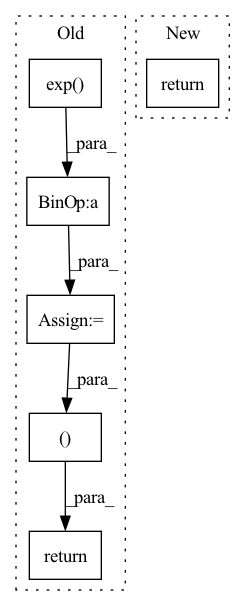

Pattern ID :488

Before Change
def forward(self, x, action, with_variance=False):
mu, logstd = self.compute_stats(x, action)
dist = Normal(mu, logstd.exp())
pred = dist.rsample()
// residual prediction
next_x = x + pred[:, :-1]
next_reward = pred[:, -1].view(-1, 1)
if with_variance:
return next_x, next_reward, dist.variance.sum(dim=1, keepdims=True)
return next_x, next_reward
def compute_error(self, obs_t, act_t, rew_tp1, obs_tp1):
mu, logstd = self.compute_stats(obs_t, act_t)
After Change
def forward(
self, x: torch.Tensor, action: torch.Tensor
) -> Tuple[torch.Tensor, torch.Tensor]:
return self.predict_with_variance(x, action)[:2]
def predict_with_variance(
self, x: torch.Tensor, action: torch.Tensor
In pattern: SUPERPATTERN
Frequency: 4
Non-data size: 6
Instances
Fragment ID: 1754490
Project Name: takuseno/d3rlpy
Commit Name: 9ccb6121c0baead0ffb85b64207c4fe6dc5fd5b5
Time: 2021-01-01
Author: takuma.seno@gmail.com
File Name: d3rlpy/models/torch/dynamics.py
M Class Name: ProbablisticDynamics
N Class Name: ProbablisticDynamics
M Method Name: forward(3)
N Method Name: forward(4)
M Parent Class: nn.Module
N Parent Class: nn.Module
M File Name: d3rlpy/models/torch/dynamics.py
N File Name: d3rlpy/models/torch/dynamics.py
M Start Line: 137
M End Line: 146
N Start Line: 94
N End Line: 96
'>
Before Change
mu = torch.clip(mu, MEAN_MIN, MEAN_MAX)
log_sigma = self.sigma_head(a)
log_sigma = torch.clip(log_sigma, LOG_STD_MIN, LOG_STD_MAX)
sigma = torch.exp(log_sigma)
a_distribution = Normal(mu, sigma)
action = a_distribution.rsample()
logp_pi = a_distribution.log_prob(action).sum(axis=-1)
logp_pi -= (2 * (np.log(2) - action - F.softplus(-2 * action))).sum(axis=1)
logp_pi = torch.unsqueeze(logp_pi, dim=1)
action = self.max_action * torch.tanh(action)
mu = torch.tanh(mu) * self.max_action
return action, logp_pi, mu
def get_log_density(self, state, action):
a = F.relu(self.fc1(state))
a = F.relu(self.fc2(a))
After Change
a_dist, a_tanh_mode = self._get_outputs(state)
action = a_dist.rsample()
logp_pi = a_dist.log_prob(action).sum(axis=-1)
return action, logp_pi, a_tanh_mode
def get_log_density(self, state, action):
a_dist, _ = self._get_outputs(state)
'>
Fragment ID: 1754506
Project Name: ryanxhr/dwbc
Commit Name: b3791e408af7125fde12cda1cdeaefbaa400aacc
Time: 2022-06-30
Author: xuhaoran8@jd.com
File Name: algos/DWBC.py
M Class Name: Actor
N Class Name: Actor
M Method Name: forward(2)
N Method Name: forward(2)
M Parent Class: nn.Module
N Parent Class: nn.Module
M File Name: algos/DWBC.py
N File Name: algos/DWBC.py
M Start Line: 35
M End Line: 52
N Start Line: 51
N End Line: 54
'>
Before Change
// w_1 = torch.exp(-0.1*(range_param.unsqueeze(-1) ** -2) * (t - c) ** 2) // [B, L, T]
// w_2 = torch.sum(torch.exp(-0.1*(range_param.unsqueeze(-1) ** -2) * (t - c) ** 2), dim=1, keepdim=True) // [B, 1, T]
w_1 = torch.exp(-0.1 * (t - c) ** 2) // [B, L, T]
w_2 = torch.sum(torch.exp(-0.1 * (t - c) ** 2), dim=1, keepdim=True) // [B, 1, T]
w_2[w_2==0.] = 1.
// w_1 = self.normpdf(t, c, range_param.unsqueeze(-1)) // [B, L, T]
// w_1 = torch.distributions.normal.Normal(c, 0.1).log_prob(t) // [B, L, T]
// w_2 = torch.sum(w_1, dim=1, keepdim=True) // [B, 1, T]
// w_2[w_2==0.] = 1.
w = w_1 / w_2
out = torch.matmul(w.transpose(1, 2), encoder_outputs)
return out, w
class DurationPredictor(nn.Module):
Duration Parameter Predictor
After Change
attn = w / (torch.sum(w, dim=1).unsqueeze(1) + 1e-8) // [B, L, T]
out = torch.bmm(attn.transpose(1, 2), encoder_outputs)
return out, attn
class DurationPredictor(nn.Module):
'>
Fragment ID: 1754504
Project Name: keonlee9420/wavegrad2
Commit Name: 523ec241c64ab635218f32d071fd85fbc469e178
Time: 2021-07-13
Author: keonlee9420@gmail.com
File Name: model/modules.py
M Class Name: GaussianUpsampling
N Class Name: GaussianUpsampling
M Method Name: forward(4)
N Method Name: forward(4)
M Parent Class: nn.Module
N Parent Class: nn.Module
M File Name: model/modules.py
N File Name: model/modules.py
M Start Line: 115
M End Line: 135
N Start Line: 120
N End Line: 134
'>
Before Change
// attention GMM parameters
g_t = torch.softmax(g_t, dim=-1) + self.epsilon // distribution weight
sig_t = torch.exp(b_t) + self.epsilon // variance
mu_t = self.mu_tm1 + self.attention_alignment * torch.exp(k_t) // mean
g_t = g_t.unsqueeze(2).expand(g_t.size(0),
g_t.size(1),
inputs.size(1))
sig_t = sig_t.unsqueeze(2).expand_as(g_t)
mu_t_ = mu_t.unsqueeze(2).expand_as(g_t)
j = self.J[:g_t.size(0), :, :inputs.size(1)]
// attention weights
phi_t = g_t * torch.exp(-0.5 * sig_t * (mu_t_ - j)**2)
alpha_t = self.COEF * torch.sum(phi_t, 1)
// apply masking
// if mask is not None:
// alpha_t.data.masked_fill_(~mask, self._mask_value)
breakpoint()
c_t = torch.bmm(alpha_t.unsqueeze(1), inputs).squeeze(1)
self.mu_tm1 = mu_t
return c_t, mu_t, alpha_t
class Attention(nn.Module):
// Pylint gets confused by PyTorch conventions here
After Change
self.attention_weights = alpha_t
self.mu_prev = mu_t
breakpoint()
return context
class OriginalAttention(nn.Module):
'>
Fragment ID: 1754496
Project Name: coqui-ai/tts
Commit Name: adf9ebd629abc21e0969db2a1c29f389b5301c9d
Time: 2019-11-12
Author: egolge@mozilla.com
File Name: layers/common_layers.py
M Class Name: GravesAttention
N Class Name: GravesAttention
M Method Name: forward(4)
N Method Name: forward(4)
M Parent Class: nn.Module
N Parent Class: nn.Module
M File Name: layers/common_layers.py
N File Name: layers/common_layers.py
M Start Line: 141
M End Line: 169
N Start Line: 149
N End Line: 180